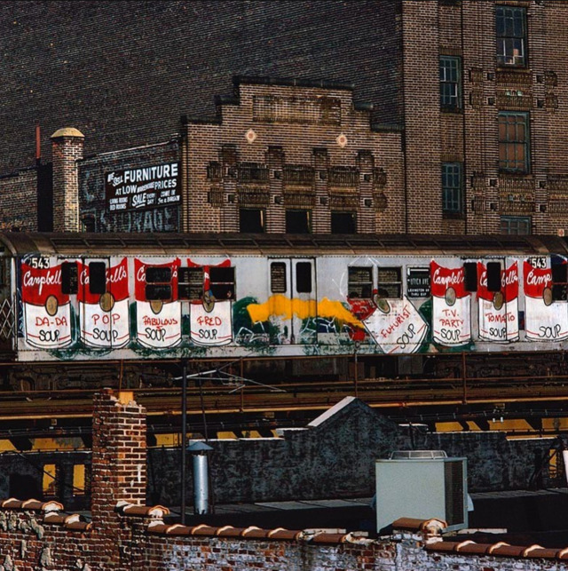

2nd Ave near Houston Street, late 1980s

The world’s tiniest boombox, 1982
2nd Ave near Houston Street, late 1980s
Coney Island, Stillwell Station, 1984
 📷: Martha Cooper. (Taken from Lee Quinones Instagram.)
1982, looking towards Riverside Drive
1982 skyline from Brooklyn
The world’s tiniest boombox, 1982
Midtown Lexington Avenue in 1961

86th and Broadway, 1967
Little Shop of Horrors at the Orpheum Theatre in 1984
116th Street near Manhattan Avenue, facing West, late 70s
Union Turnpike in Queens looking towards Manhattan, 1974

Soft Places on 42nd Street, 1978

TKTS in 1975
Street fair on Prince Street in Soho, 1981
Selling boots outside H&H Bagels, 1989

Golden’s on the Upper West Side, 1981. I probably owe them a few hundred bucks in stolen ink. Sorry, Golden’s.
Broadway and 74th, 1970s
Lower East Side, 1970s

Bell bottoms and bubbles outside the Met, 1970s

Columbus and 86th, 1970s

Spanish Harlem, 1980s
Lexington and 50th, 1985
Broadway and 51st, 1985
Yo.

Fascination, Linda Wong, Corruption, 1985
Working for a living. Chelsea, 1985.

View of the WTC, 1985